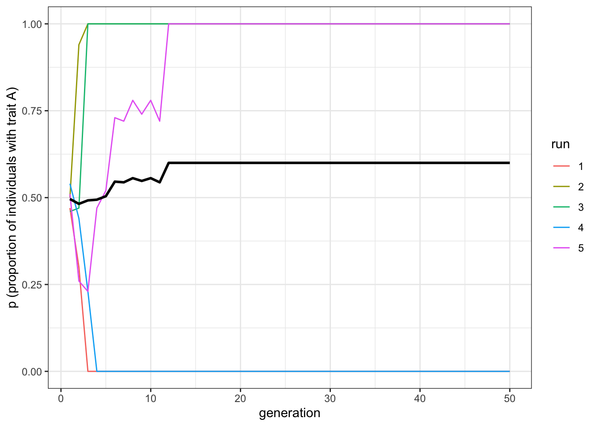
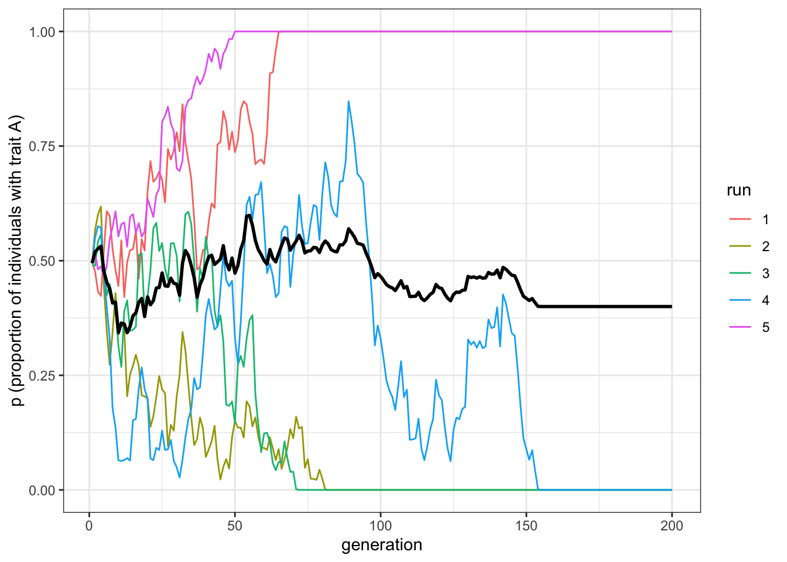
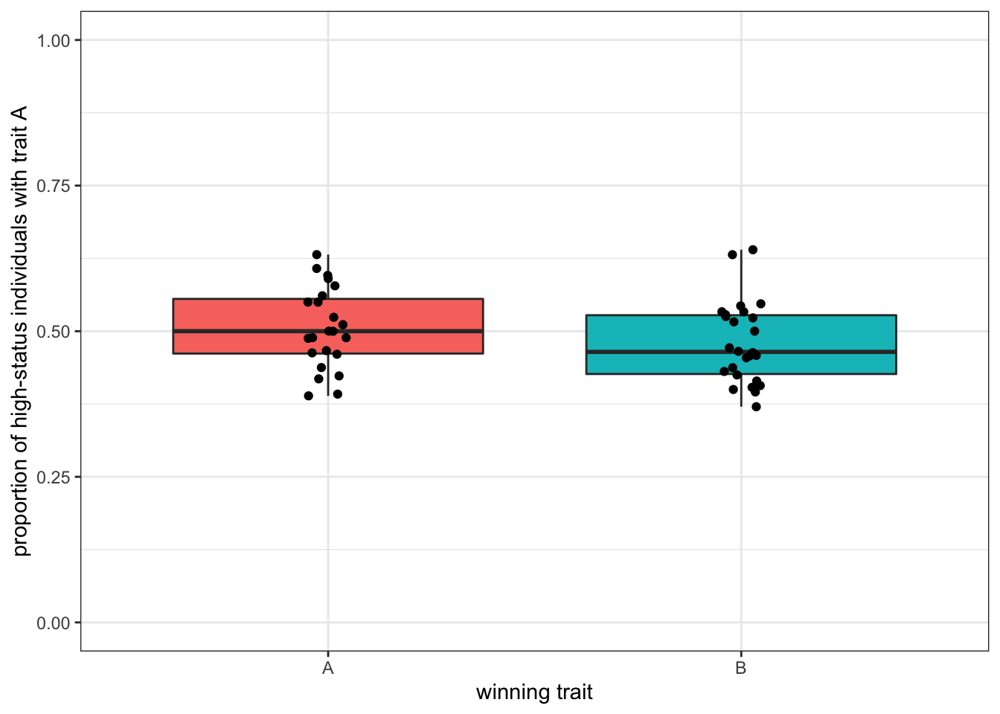

5 Biased transmission: demonstrator-based indirect bias
In the previous two chapters we examined two forms of biased transmission, one where the bias arises due to characteristics of the traits (or [direct bias][Biased transmission (direct bias)]) and another where the bias arises due to the characteristics of the population (or indirect bias). In the previous chapter we examined frequency-dependent indirect bias which takes into account the frequency of the trait (or [conformity][Biased transmission (indirect bias: frequency)]). Here we examine indirect bias that takes into account specific features of the demonstrators. This demonstrator-based bias is also called ‘model bias’ or ‘context bias’ in the cultural evolution literature.
Whereas the simulations we created previously are fairly standard, indirect demonstrator-based biases can be implemented in several ways. Demonstrator biases result whenever individuals decide whether to copy or not by taking into account any features of the demonstrators, as long as it is not directly tied to the traits. The most studied demonstrator bias is prestige bias, where individuals are more likely to copy from demonstrators who are considered more ‘prestigious’ or high in subjective social status, for example because other individuals show deference to them. Alternatively, individuals can copy demonstrators who are more successful according to some objective criterion (e.g. wealth) independently from how others judge them, or they can copy individuals that are more similar to themselves, or older (or younger) than themselves, and so on. The key point is that the decision is not directly linked to the cultural trait itself, and relates to some characteristic of the demonstrator(s) from whom one is copying.
5.1 A simple demonstrator bias
To implement a simple version of demonstrator-biased cultural transmission, we first need to assume that there are some intrinsic differences between individuals within the population. Up until now, our individuals have only been described by the traits they possess. We now want individuals to have some additional feature which others can use when deciding whether to copy that individual. We call this feature ‘status’. For simplicity, an individual’s status is a binary variable that could stand for whether they are prestigious or not, successful or not, and so on. We define a parameter \(p_s\) that determines the probability that an individual has high status, as opposed to low status.
library(tidyverse)
set.seed(111)
N <- 100
p_0 <- 0.5
p_s <- 0.05
population <- tibble(trait = sample(c("A", "B"), N, replace = TRUE, prob = c(p_0, 1 - p_0)),
status = sample(c("high", "low"), N, replace = TRUE, prob = c(p_s, 1 - p_s))) We can inspect the tibble by typing its name in the R console
population## # A tibble: 100 x 2
## trait status
## <chr> <chr>
## 1 A low
## 2 A low
## 3 B low
## 4 A low
## 5 B low
## 6 B low
## 7 B low
## 8 A low
## 9 B low
## 10 B high
## # … with 90 more rowsWith \(p_s=0.05\) around 5 individuals in a population of 100 will have high status. In this specific case, one of them is individual 10.
We now need to make it so that these rare high status individuals are more likely to be copied. One way of doing this is to assume that the probabilities of picking high-status and low-status individuals as demonstrators are different. So far, when using the function sample() to select demonstrators, we did not include any specific probability. This meant that each individual of the previous generation had the same likelihood of being selected and copied. Instead, now we pass to the function a vector of probabilities to weight the choice. We assume that the probability of selecting high status individuals as demonstrators is always equal to 1, but the probability of selecting low-status individuals is given by a further parameter, \(p_\text{low}\). When \(p_\text{low}=1\), the simulations correspond to unbiased transmission, as everybody has the same probability of being chosen. When \(p_\text{low}=0\), there is a strict status-based demonstrator bias, where only high-status individuals are ever selected as demonstrators.
To implement this, we first store in p_demonstrator the probabilities of being copied for each member of the population:
p_low <- 0.01
p_demonstrator <- rep(1,N)
p_demonstrator[population$status == "low"] <- p_lowThen we sample the traits in the population using these probabilities. Notice the condition if(sum(p_demonstrator) > 0). This is necessary in case there are no high-status individuals (for example when \(p_s\approx0\)) and the probability of selecting a low status demonstrator to copy is 0 (\(p_\text{low}=0\)). This would make the summed probability equal to 0, and without the condition generate an error. With the condition, no copying occurs, which is what we would expect in this situation.
if(sum(p_demonstrator) > 0){
demonstrator_index <- sample (N, prob = p_demonstrator, replace = TRUE)
population$trait <- population$trait[demonstrator_index]
}As usual, we can wrap everything in a function.
biased_transmission_demonstrator <- function(N, p_0, p_s, p_low, t_max, r_max) {
output <- tibble(generation = rep(1:t_max, r_max), p = rep(NA, t_max * r_max), run = as.factor(rep(1:r_max, each = t_max)))
for (r in 1:r_max) {
population <- tibble(trait = sample(c("A", "B"), N, replace = TRUE, prob = c(p_0, 1 - p_0)),
status = sample(c("high", "low"), N, replace = TRUE, prob = c(p_s, 1 - p_s)))
output[output$generation == 1 & output$run == r, ]$p <- sum(population$trait == "A") / N # add first generation's p for run r
for (t in 2:t_max) {
p_demonstrator <- rep(1,N)
p_demonstrator[population$status == "low"] <- p_low
if(sum(p_demonstrator) > 0){
demonstrator_index <- sample (N, prob = p_demonstrator, replace = TRUE)
population$trait <- population$trait[demonstrator_index]
}
output[output$generation == t & output$run == r, ]$p <- sum(population$trait == "A") / N # get p and put it into output slot for this generation t and run r
}
}
output # export data from function
}We can now test our simulation, assuming a very low, but not zero, probability of selecting low-status individuals as demonstrators. We are using the usual plot_multiple_runs() function to plot the results of the simulations, reproduced for convenience here.
data_model <- biased_transmission_demonstrator(N = 100, p_s = 0.05, p_low=0.0001, p_0 = 0.5, t_max = 50, r_max = 5)
plot_multiple_runs(data_model)
The results are similar to what we saw in the [previous chapter][Biased transmission (indirect bias: frequency)] for conformity: one of the two traits quickly reaches fixation. In the case of conformity, however, the trait reaching fixation was the one that happened to have a slightly higher frequency at the beginning, because of the random initialisation. With a demonstrator bias, this is not the case.
From this perspective, an indirect demonstrator-based bias is more similar to unbiased transmission. If you remember from the first chapter, simulations with unbiased transmission also ended up with one trait reaching fixation in small populations (\(N=100\)), but in bigger ones (\(N=10000\)) the frequencies of the two traits remained around \(p=0.5\). What happens with demonstrator-based bias?
data_model <- biased_transmission_demonstrator(N = 10000, p_s = 0.005, p_low=0.0001, p_0 = 0.5, t_max = 200, r_max = 5)
plot_multiple_runs(data_model)
Even with \(N=10000\), if the number of high-status individuals is sufficiently low, as in this case (\(p_s=0.005\) means that, on average, 50 individuals are high-status in each run), traits reach fixation. By reducing the pool of demonstrators, demonstrator-based bias makes drift more important for the overall dynamics. The pool of high-status demonstrators (equal to \(Np_s\)) is the effective population size, which is much smaller than the actual population size (\(N\)).
You can experiment with different values of \(p_s\) and \(p_\text{low}\). How big can the pool of high-status demonstrators be before the dynamics become indistinguishable from unbiased transmission?
5.2 Predicting the ‘winning’ trait
With conformity, as just mentioned, the trait that reaches fixation is the one starting in the majority. With unbiased transmission the trait that goes to fixation cannot be predicted at the beginning of the simulation. With a demonstrator-based bias, a reasonable guess would be that the ‘winning’ trait is the one that is, at the beginning, most common among the high-status individuals. Can we check this intuition with our model?
Currently the output we obtain from the simulations is not suitable for this purpose. On the one hand, we do not have the crucial piece of information that we need: the proportion of each trait amongst the high-status individuals when the population is initialised. On the other hand, we have much information that we do not need, such as the frequency of the two traits at each time step. We just need to know which traits reach fixation. We can therefore rewrite the biased_transmission_demonstrator function and change the output tibble to suit our needs.
biased_transmission_demonstrator_2 <- function(N, p_0, p_s, p_low, t_max, r_max) {
output <- tibble(status_A = rep(NA, r_max), p = rep(NA, r_max))
for (r in 1:r_max) {
population <- tibble(trait = sample(c("A", "B"), N, replace = TRUE, prob = c(p_0, 1 - p_0)),
status = sample(c("high", "low"), N, replace = TRUE, prob = c(p_s, 1 - p_s)))
output[r, ]$status_A <- sum(population$status == "high" & population$trait == "A") /
sum(population$status == "high")
for (t in 2:t_max) {
p_demonstrator <- rep(1,N)
p_demonstrator[population$status == "low"] <- p_low
if(sum(p_demonstrator) > 0){
demonstrator_index <- sample (N, prob = p_demonstrator, replace = TRUE)
population$trait <- population$trait[demonstrator_index]
}
}
output[r, ]$p <- sum(population$trait == "A") / N
}
output # export data from function
}Here, status_A gives the starting frequency of A amongst the high status individuals. \(p\), as before, gives the frequency of \(A\) in the entire population, but we only record this value at the very end of the simluation, to see if one trait has gone to fixation.
Let’s run the new function, biased_transmission_demonstrator_2, for 50 runs (setting \(r_\text{max}=50\)) so that we have more independent data points, and inspect the output. We use set.seed to make sure your output is the same as ours.
set.seed(111)
data_model <- biased_transmission_demonstrator_2(N = 100, p_s = 0.05, p_low=0.0001, p_0 = 0.5, t_max = 50, r_max = 50)
data_model## # A tibble: 50 x 2
## status_A p
## <dbl> <dbl>
## 1 0.2 0
## 2 0.571 1
## 3 0.75 0
## 4 0.286 0
## 5 1 1
## 6 0.333 1
## 7 0.8 0
## 8 0.333 0
## 9 0.571 0
## 10 0.333 0
## # … with 40 more rowsEach line of the output is a run of the simulation. In the first run, for example, 20% of high-status individuals had the trait \(A\) at the beginning, and the frequency of 0trait \(A\) at the end of the simulation was 0, meaning that \(B\) reached fixation. In the second run, the starting frequency of \(A\) was 57%, and by the end \(A\) went to fixation. From a cursory inspection of the output, it seems our guess was correct. But let’s visualise all the data to be sure.
We want to know how the initial proportion of high-status individuals is related to the two possible outcomes (trait \(A\) reaches fixation or trait \(B\) reaches fixation). A convenient way is to use a boxplot. In the code below, we first eliminate the runs where the traits did not reach fixation (if they exist) using the new function filter(), and, for clarity, we assign the trait name \(A\) or \(B\) to each run according to which trait reached fixation. We can then plot our output.
The main novelties in this code are the new ggplot ‘geoms’ geom_boxplot() and geom_jitter(). Whereas boxplots are useful to detect aggregate information on our simulations, geom_jitter() plots also the single data points, so we can have a better idea on how the proportions of high-status individuals are distributed in the various runs. We could have done this with our usual geom_point(), but geom_jitter() scatters randomly (at a distance specified by the parameter width) the points in the plot. This allows to avoid the overlapping of individual data points (known as overplotting).
data_model <- filter(data_model, p == 1 | p == 0)
data_model[data_model$p==1, ]$p <- "A"
data_model[data_model$p==0, ]$p <- "B"
ggplot(data = data_model, aes(x = p, y = status_A, fill = p)) +
geom_boxplot() +
geom_jitter(width = 0.05) +
labs(y = "proportion of high-status individuals with trait A",
x = "winning trait") +
theme_bw() +
theme(legend.position = "none") 
The plot shows that when trait \(A\) reaches fixation there are more high-status individuals with trait \(A\) at the beginning, and vice versa for \(B\), confirming our intuition. However, this is far from being a safe bet. Runs with only a quarter of high-status individuals with \(A\) ended up with all \(A\)s in the population and, conversely, runs with 80% of high-status individuals with \(A\) ended up with the fixation of \(B\). With bigger populations, it is even worse.
data_model <- biased_transmission_demonstrator_2(N = 10000, p_s = 0.005, p_low=0.0001, p_0 = 0.5, t_max = 200, r_max = 50)
data_model <- filter(data_model, p == 1 | p == 0)
data_model[data_model$p==1, ]$p <- "A"
data_model[data_model$p==0, ]$p <- "B"
ggplot(data = data_model, aes(x = p, y = status_A, fill = p)) +
geom_boxplot() +
geom_jitter(width = 0.05) +
labs(y = "proportion of high-status individuals with trait A",
x = "winning trait") +
ylim(c(0,1)) +
theme_bw() +
theme(legend.position = "none") 
With \(N=10000\) and around 50 high-status individuals, the traits are more equally distributed among ‘influential’ demonstrators at the beginning, and there is hardly any difference in the two outcomes.
5.3 Summary of the model
In this chapter we modeled an example of indirect, demonstrator-based, biased transmission. We assumed that a fraction of individuals in the population was ‘high-status’ and thus more likely to be selected as demonstrators. The results show that in this situation a trait is likely to become predominant even when populations are large. This is due to the fact that a demonstrator bias effectively reduces the pool of demonstrators and accelerates convergence through a similar process as drift / unbiased transmission. We also saw that the possibility of predicting which trait will become predominant depends on the number of high-status demonstrators. When there are few high-status demonstrators, then the most common trait amongst these high-status demonstrators will likely go to fixation. When their number increases, it is more difficult to make such a prediction.
We also saw how it is important to modify the output of a model depending on the question we are interested in. We used a novel ggplot aesthetic to produce a boxplot, a convenient way of displaying the distribution of data among different groups.
5.4 Analytical appendix
IS THERE ANYHTIHG WE CAN DO HERE?
5.5 Further readings
Examples of simulation models implementing indirect, demonstrator-based, biased transmission include Mesoudi (2009), an individual-based model that explores how prestige bias can generate clusters of recurring behaviours, applied to the case of copycat suicides. Henrich Joseph, Chudek Maciej, and Boyd Robert (2015) presents a population-level model that links prestige to the emergence of whithin-group cooperation. Henrich (2004) describes an analytical, population-level, model, where individuals copy the most succesfull demonstrator in the population.
An earlier analytical treatment of demonstrator-based bias, with extensions on the evolution of symbolic traits that may be associated to demonstrators is in Chapter 8 of Boyd and Richerson (1985).
Finally, Henrich and Gil-White (2001) is the classic treatment of prestige bias, and a recent review of the empirical evidence supporting it is Jiménez and Mesoudi (2019).
References
Boyd, Robert, and Peter J. Richerson. 1985. Culture and the Evolutionary Process. Culture and the Evolutionary Process. Chicago, IL, US: University of Chicago Press.
Henrich, Joseph. 2004. “Demography and Cultural Evolution: How Adaptive Cultural Processes Can Produce Maladaptive Losses: The Tasmanian Case.” American Antiquity 69 (2): 197–214. doi:10.2307/4128416.
Henrich, Joseph, and Francisco J Gil-White. 2001. “The Evolution of Prestige: Freely Conferred Deference as a Mechanism for Enhancing the Benefits of Cultural Transmission.” Evolution and Human Behavior 22 (3): 165–96. doi:10.1016/S1090-5138(00)00071-4.
Henrich Joseph, Chudek Maciej, and Boyd Robert. 2015. “The Big Man Mechanism: How Prestige Fosters Cooperation and Creates Prosocial Leaders.” Philosophical Transactions of the Royal Society B: Biological Sciences 370 (1683): 20150013. doi:10.1098/rstb.2015.0013.
Jiménez, Ángel V., and Alex Mesoudi. 2019. “Prestige-Biased Social Learning: Current Evidence and Outstanding Questions.” Palgrave Communications 5 (1): 1–12. doi:10.1057/s41599-019-0228-7.
Mesoudi, Alex. 2009. “The Cultural Dynamics of Copycat Suicide.” PLOS ONE 4 (9): e7252. doi:10.1371/journal.pone.0007252.